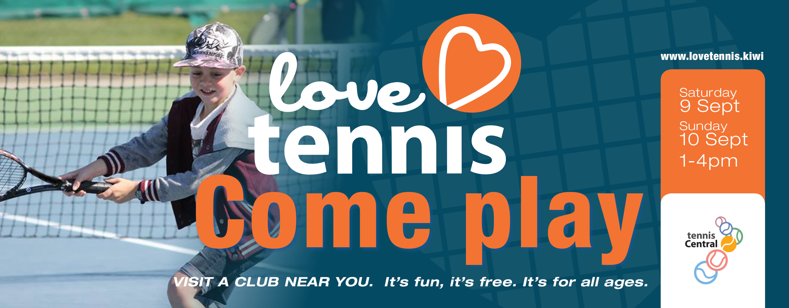

New members can register at any Saturday session.
Go to: Love Tennis to find out more.
October
2018
September
Sat 8 & Sun 9 Sept – 1-4pm- ‘Love Tennis’ Open Weekend @ Petone Tennis Club
Tues 11 & 18 Sept – Interclub Trials @ Mitchell Park
Sat 15 Sept - Saturday Junior Coaching begins
Tues 25 Sept – Interclub Coaching begins (3x 1hr sessions)
October
Fri 12 Oct - 5.30-7.30pm - Family Fun Nite
Tues 16 Oct (pp 23/10) – HVTA Intermediate Schools Champs @ Mitchell Park
Weds 17 Oct – Junior Club Nite begins
Thurs 18 Oct (pp 25/10) – HVTA Primary Schools Champs @ Mitchell Park
Sat 27 Oct- Junior Interclub starts
November
Fri 23 Nov – 5.30-7.30pm- Family Fun Nite
December
Sat 15 Dec- Junior Christmas BBQ & games
15-18 Dec - HV Junior Christmas Tournament
Junior Convenor
| Junior Interclub fee | |
| Session fee (covers balls & entry) | $30 |
| Club polo shirt (subsidised price) | $20 |
| Total Interclub fee | $50 |
Court keys are available to members for a $20 fee - refunded when key is returned
Family discounts of 30% on membership fees (not interclub fees) are applicable when joining 3 or more members per family.
Membership fees are payable by the end of September 2018. Interclub fees are payable by the end of October 2018.
| 5 to 8 year olds | 8.30 to 9.30am |
| 9 to 10 year olds | 9.30 to 10.45am |
| 11 years + and all interclub players | 10.45am to 12.15pm |
Please note that session times may be changed depending on player numbers.
For the first two sessions, subject to weather conditions, we will be running the Hot Shots programme – this will allow the players to spend more time hitting the ball and practising tennis skills, as we use smaller courts with lower compression balls.
For the older and interclub players, full courts will be used with normal balls
Gary Nelson and Lewis Bazalo are our two professional coaches who run our Saturday morning coaching sessions and Tuesday afternoon interclub team practices. Their skill, patience and passion for tennis is a real asset to our Club. We also have Emily Dine and Nicole Brown as our assistant coaches on Saturday mornings.
Depending on age and ability, junior members may be at a suitable playing level to play interclub and/or attend our Wed junior club nights.
Interclub players must be committed to be available to play all scheduled games in the pre and post Xmas season.
As we want to ensure players enjoy interclub, inclusion in an interclub team is subject to the approval of the Junior committee who will consider the players age, ability, and also the overall numbers of players from the club and how many teams we can enter in the competition.
Interclub trials may be held for some players where we are unsure of a player’s ability, or to ensure, where possible, the player gets placed in the appropriate team. Interclub usually starts late October and runs until early December. Post Xmas, it continues from around the 1st weekend of the school term (early Feb) to the end of March.
Interclub games usually start at either 8am or 10.30am each Saturday, and are played at courts throughout the Hutt Valley- schools, tennis clubs or Mitchell Park.
Interclub team practices are held each Tuesday afternoon from 4 to 7pm. Teams will be allocated a time slot once teams are finalised.
Wednesday Junior Club nights are suitable for players who are close to, or have reached Interclub playing standard. There are 2 sessions, the first one starts at 5pm. Players enjoy organised games as well as learning court and team etiquette. These start after Daylight saving commences.